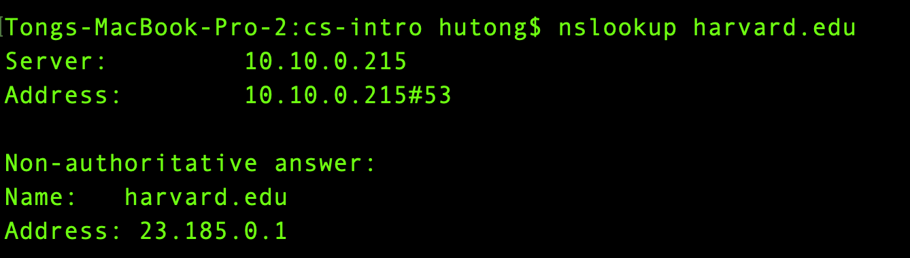
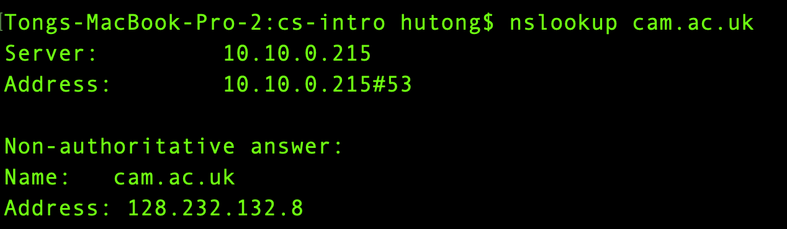
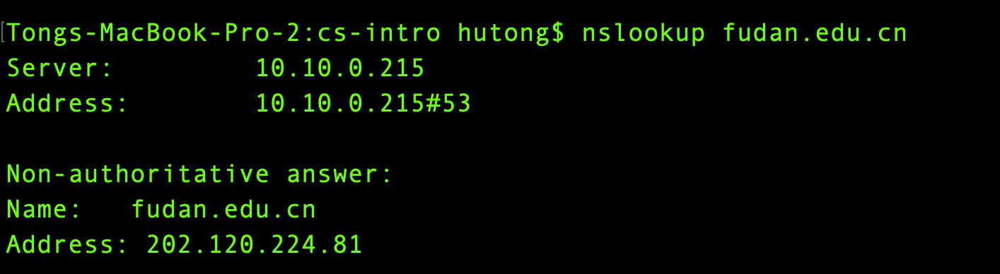

网络协议(下)
网络协议
什么是协议？它是一套统一的规则。比如人类初次见面，一般某人会先伸出手，然后做自我介绍：“我叫Tom”；另一个人随即会做同样的动作。这是人类沟通的一套规则。
在互联网通信中，如何探测到通信目标、由哪一边先发起通信、使用哪种语言进行通信、怎样结束通信等规则都需要事先确定。不同的硬件、操作系统之间的通信，所有的这一切都需要一种规则。这个规则就是网络协议。
TCP/IP协议
网络传输的数据类型纷繁复杂，涉及到很多环节。我们可以通过物流公司来理解网络。我们寄包裹需要填快递单，包括收件人、寄件人、物品类型、重量等信息，填好后将包裹交给物流公司。物流公司根据快递单的信息安排车辆和司机，最终将包裹送到目的地。
与物流产业一样，网络传输中每个环节都需要有专门的规范。
TCP/IP是一系列网络协议的总称，是互联网的基础架构，又称为TCP/IP协议族。其中TCP和IP协议最为重要，所以以它们的名字命名。
网络通信涉及的环节很多，因此被划分成不同的层次。TCP/IP协议族共有四个抽象层次。每一层协议都有各自分工。
Chrome浏览器所在的是应用层，它按照HTTP格式把数据打包好，给到传输层；传输层的TCP协议会把文件切成更小的碎片，确保数据包安全传输。
网络（互连）层的 IP协议会找到最佳路径。消息会通过光纤、WiFi等网络发过去。到达目的地之后，打散的数据被TCP重组为原始数据。
TCP/IP协议族中的重要协议列举如下：
- TCP - 传输控制协议
传输层协议。
TCP负责在数据传送之前将它们分割为IP包，然后在它们到达的时候将它们重组。
- IP - 网际协议
网络层协议。
负责在因特网上发送和接收数据包。负责寻找网络最佳路径。
- UDP - 用户数据报协议
传输层协议。
无连接的传输协议。
- HTTP - 超文本传输协议
应用层协议。
HTTP负责web服务器与web浏览器之间的通信。
- HTTPS - 安全的HTTP协议
应用层协议。
HTTPS负责在web服务器和web浏览器之间的安全通信。
- SMTP - 简易邮件传输协议
应用层协议。
用于电子邮件的发送。
- IMAP - 因特网消息访问协议
应用层协议。
用于电子邮件接收。
- POP3 - 邮局协议
应用层协议。
同上。
IP地址
IP地址由四段组成，每个字段是一个字节，即4个字节。
IP地址由两部分组成：主机地址和网络地址。IP地址又分为A类、B类和C类地址。
- A类IP地址
首字节表示网络地址（最高位是0，首字节取值为1-126），后三字节表示主机地址。
A类地址可以拥有1600多万台主机。
- B类IP地址
前两个字节是网络地址，（首字节最高两位是10，首字节取值为128-191）。后两个字节是主机地址。
B类地址可以拥有60000多台主机。
- C类IP地址
前三个字节是网络地址，（首最高三位是110，即该字节取值为192-223），第四个字节是主机地址。
C类地址理论最多只能拥有254台主机。
See also
互联网发展的早期，在IP地址严重不足的情况下，一些大公司和组织依然希望给所有的主机分配独立的IP地址，所以才导致出现了IP地址的分类。当时也没有人能预料到互联网有一天会如此普及。
例如，A类地址占整个IP地址空间的50%，但只能分配给最多126个组织，这些组织全部都在美国。整个英国的IP地址也只有1235万，而每个A类地址可以拥有1600多万台主机地址，造成严重的浪费。作为互联网普及程度最高的国家，中国没有一个完整的A类地址。
哈佛大学的IP地址：23.185.0.1，这是一个A类地址。（原因参考本页A类IP地址）
{kind=link}
B类地址占整个IP地址空间的25%，最多分配给16384个组织。完整的B类地址大部分都在欧洲。
剑桥大学的IP地址：128.232.132.8，这是一个B类地址（原因参考本页B类IP地址）
{kind=link}
中国几乎所有大学都使用C类IP地址。例如复旦大学的IP地址：202.120.224.81，这是一个C类地址（原因参考本页C类IP地址）
{kind=link}
部分A类地址分配：
3.0.0.0/8：通用
9.0.0.0/8：IBM
11.0.0.0/8：美国国防部
12.0.0.0/8：AT&T贝尔实验室
13.0.0.0/8：施乐
15.0.0.0/8：HP
16.0.0.0/8：DEC
17.0.0.0/8：苹果
18.0.0.0/8：MIT
19.0.0.0/8：福特汽车
55.0.0.0/8：波音
56.0.0.0/8：邮政局